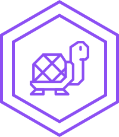

Cursos de Web Design
JavaScript e jQuery
No curso de JavaScript e jQuery você irá aprender como manipular os elementos do DOM a partir de interações do usuário. Primeiro eu começo com os fundamentos do JS, ensinando a sintaxe, variáveis, funções, objetos e outros elementos básicos.

UI Design
UI Design, ou User Interface Design (Design de Interface do Usuário), é o meio pela qual uma pessoa interage e controla um dispositivo, software ou aplicativo. Esse controle pode ser feito por meio de botões, menus e qualquer elemento que forneça uma interação entre o dispositivo e o usuário.
SASS
O Sass é uma linguagem baseada em CSS (opa, aí já facilita, não é mesmo?) que depois de compilada gera o bom e velho CSS. Possui duas sintaxes diferentes, o SASS e o SCSS. Essa última é a que acho mais bacana pela semelhança com CSS normal, a outra é atrelada a indentação.
Web Design
O Web Design é uma extensão da prática do design gráfico, onde o foco do projeto é a criação de web sites e documentos disponíveis no ambiente da World Wide Web.